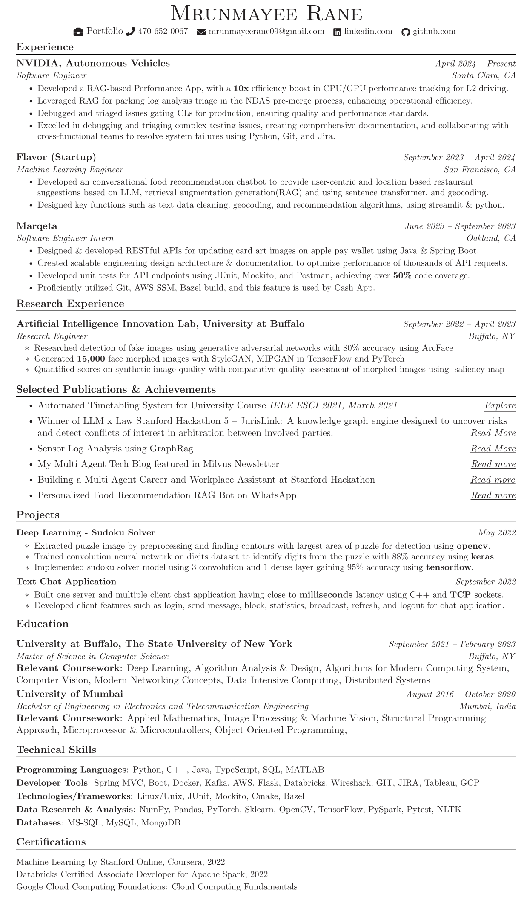

About

Hey there, I'm Mrunmayee Rane
Hail from Santa Clara, California!
I am deeply passionate about constructing scalable systems and contributing to high quality code.
My expertise extends to Python, C++, and Java, which I have successfully utilized in my professional roles at Marqeta and NVIDIA.
I enjoy solving challenging computer science problems in machine learning, computer vision and software engineering, through my rich background in research, academics, and professional experiences.
Driven by a deep sense of gratitude for the opportunities I've had, I am committed to using my skills and resources to give back. Being born into a family that could feed and educate me was a privilege I never take for granted, and I plan to spend my life paying that forward, harnessing technology for social good.
When I'm not coding, you'll likely find me out:
- Running
- Cycling
- Playing badminton
Welcome to my portfolio, where innovation and a genuine passion for active endeavors come together to define my journey.
Skills
Projects
- All


Research
During my Master's I got opportunity to work with Prof. David Doermann and researched on face morph images in Artificial Intelligence & Innovation lab, University at Buffalo

Researched detection of fake images by creating morphed faces using generative adversarial networks with 80% accuracy using ArcFace and generated 15,000 face morphed images using single & differential images with StyleGAN, MIPGAN in tensorflow and pytorch. Quantified scores to assess synthetic image quality with human in feedback loop, ghosted methods for morphed images using pytorch for comparative quality assessment of StyleGAN and MIPGAN images using saliency map and localization of pixels.
IEEE Publications
During my bachelor's I got opportunity to work with Prof. Mani Roja Edinburg in developing automated university scheduling system for University of Mumbai

This paper addresses a solution for timetabling problems of complex environments having electives, tutorials, multiple student batches, practical subjects, interdepartmental courses. The solution considers a wide range of constraints divided into soft and hard, to generate faculty, classroom/laboratory and student timetables. The implementation of the ‘Automated Timetabling System’ in our institute, resulted in feasible timetables, which are much more optimized and accurate than if they were created manually.
Resume
Contact
Location:
Santa Clara, CA, 95051
Email:
mrunmayeerane09@gmail.com
Call:
+1 470-652-0067